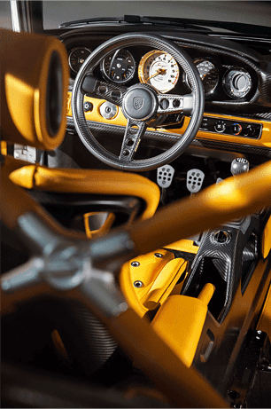

<!-- Main -->
<main class="main">
<section class="porsche-singer">
	<!-- section__images -->
	<div class="images">
		<div class="images__wrap-img">
		   
		</div>
		<div class="images__wrap-slider"></div>
		<div class="images__arrow-down"></div>
	</div>

	<!-- section__details -->
	<div class="details">

	<div class="details__contant">
			<p class="details__brand"><span class="details__brand_greey">PORSCHE </span><span class="details__brand_red">SINGER </span></p>
			<h1 class="details__title">
				964 <span class="details__title_bold" >Dynamic & Lightweight</span> Study 
			</h1>	
			<div class="details__text">
				<div class="details__inner">
			       <p class="details__paragraph">The Singer - Williams DLS Goodwood is the ultimate carbon fiber vision of a 1990 Porsche 964 made by restorers at Singer Vehicle Design, partnering with the racing firm Williams</p>
			   </div>
			   <div class="details__read-more">
				<p class="details__paragraph">The Singer - Williams DLS Goodwood is the ultimate carbon fiber vision of a 1990 Porsche 964 made by restorers at Singer Vehicle Design, partnering with the racing firm Williams</p>
				<p class="details__paragraph">The Singer - Williams DLS Goodwood is the ultimate carbon fiber vision of a 1990 Porsche 964 made by restorers at Singer Vehicle Design, partnering with the racing firm Williams</p>
				</div>
			</div>	
		</div>
		<!--  
         <div class="details__wrapper">
				<div class="details__partials">

					<button class="details__button">DETAILS </button>
					<div class="details__arrows">

		            <div class="details__wrap-arrow">
						   <span class="details__arrow details__arrow_pre"></span>
						</div>

		           <div class="details__wrap-arrow">
						  <span class="details__arrow details__arrow_next"></span>
		          </div>
					</div>
				</div> -->

<!-- 			   <div class="slider">
					<div class="slider__inner">

						<div class="slider__item ">
							
						</div>

						<div class="slider__item">
							
						</div>

						<div class="slider__item slider__item_active">
							
						</div>
					</div>
		   </div>

		</div>
		 -->

	 </div>
 

</section>
	
</main>
